This page contains a description of the messaging system. This system allows you to safely synchronize between threads at the same time operations such as sending and receiving values in the message queue are being carried out.
Message Queue Initialization
The message queue is initialized with OS_InitMessageQueue.
The message is an OSMessage type, which is defined as a void*OS_InitMessageQueueOSMessage array region that actually stores the message.
The message queue is laid out internally according to the following structure:
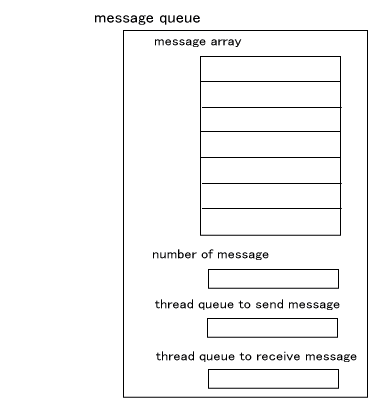
The "message array" in the figure is the OSMessage array and is the message region. The user specifies this size during initialization. This region is used as the FIFO queue. Internally, it is actually the ring buffer, and there are variables that exist to control it. However, the explanation on this page has been left out.
The "number of messages" in the figure is the number of valid messages inside the message region. Immediately after initialization, this number is 0.
The "thread queue to send messages" and "thread queue to receive messages" are the thread queues used to send and receive messages. These queues are explained later.
Sending Messages
OS_SendMessage
The figure below shows thread1 sending a message twice.
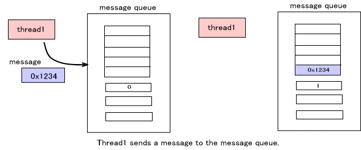
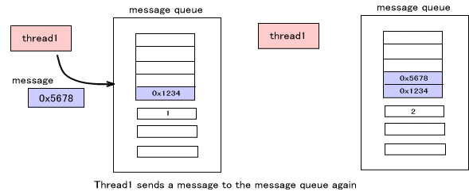
When sending, designate either BLOCK mode or NOBLOCK mode. They work the same as long as the message queue is not full. As shown in the figure above, the message is only registered in the queue. However, their behavior is different when trying to send the message to a message queue that is already full.
BLOCK Mode
Until the message can be sent—until other threads receive the message for this message queue withand the message queue is emptied, the thread pauses and waits. At that time, a thread rescheduling must take place, and another thread must enter the executable state. OS_ReceiveMessage
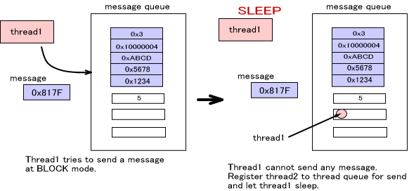
NOBLOCK Mode
Returns immediately even if the message could not be sent. This mode can determine whether or not the message was able to be sent with the return value from the function.
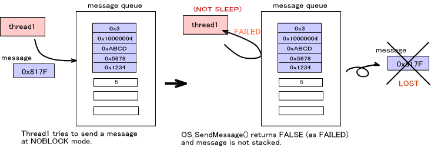
Receiving Messages
OS_ReceiveMessage is a function for receiving messages.
The figure below shows thread2 receiving a message twice. The message reception order is same as the order sent in this message queue. In other words, whatever was sent first and still remains in the message queue is what is received.
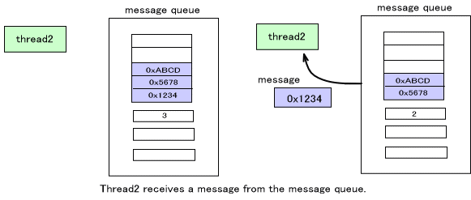
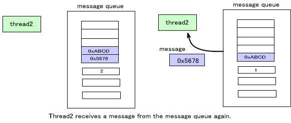
When receiving, designate either BLOCK mode or NOBLOCK mode. They work the same as long as the message queue is not full. As shown in the figure above, the message is only loaded from the queue. However, their behavior is different when trying to receive the message from a message queue that is empty.
BLOCK Mode
Until the message can be sent—until other threads receive the message for this message queue withand the message queue is emptied, the thread thread pauses and waits. At that time, a thread rescheduling must take place, and another thread must enter the executable state. OS_SendMessage
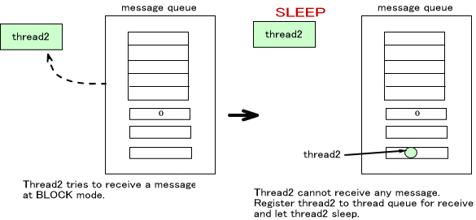
NOBLOCK Mode
Returns immediately even if the message could not be received. This mode can determine whether or not the message was able to be received based on the return value from the function.
The Rescheduling Mechanism when Sending and Receiving
In the figure below, thread1 has attempted to send a message to the message queue in BLOCK mode, but since the message queue is full, thread1 goes into a sleep state. Be aware that thread1 has been registered in the send thread queue.
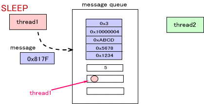
In this next figure, thread2 receives the message.
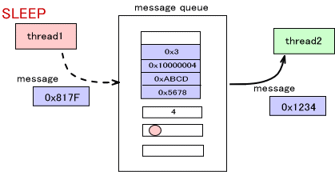
When using OS_ReceiveMessagethread1 is currently registered, it is put into an executable state.
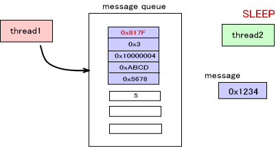
Thread rescheduling is carried out in this state. The thread with the highest priority, between the current thread (the thread attempting to receive the message) and the thread that is executable, is put into an executable state. In the next figure, if the priority of thread1 is higher than that of thread2, the message is sent and thread1 goes into an executable state.
Conversely, when using OS_SendMessage
There are times when multiple threads have been registered in the message queue. In this case as well, use the thread queue mechanism to put the registered threads into an executable state and to re-schedule them all at once.
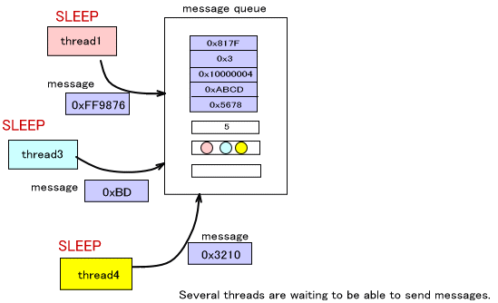
Send Message Interrupts
When sending a message to the message queue with OS_SendMessageOS_ReceiveMessageOS_JamMessage
If OS_JamMessage
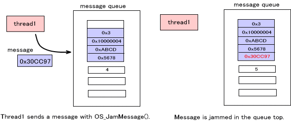
Message Queue Reference
To simply reference the top of the message queue (the next message to be received), OS_ReadMessage
An Overview of OS Functions ( Message )
12/15/2004 Corrected typos
11/10/2004 Initial version
CONFIDENTIAL